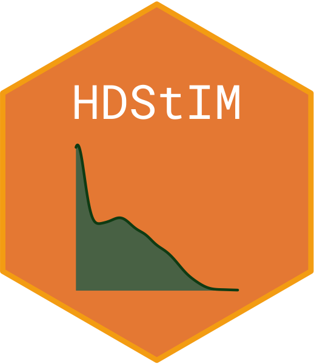

stimcellselector 
The goal of this package is to select cells from stimulated samples that have responded to the stimulant in CyTOF/Flow cytometry stimulation assays. Starting from the identified cell populations either through automated clustering such as FlowSOM or traditional cell gating, the primary function stim_cell_selector() follows a heuristic approach to group cells into responding and non-responding.
For a combination of cell population and stimulation type (e.g., CD127+ T-helper cells and interferon-alpha), stim_cell_selector() starts by performing k-means clustering on the combined set of cells from stimulated and unstimulated samples. K-means clustering is performed on expression data of all the state markers combined. Upon clustering using a contingency table as drawn below, a Fisher’s exact test determines the effect size and the statistical significance of partitioning. Cells form the combinations that pass the Fisher’s exact test are considered as responding. An optional UMAP plot can also be generated to verify the cell partitioning in responding and non-responding groups visually.
matrix(c(1500, 345, 230, 2500),nrow = 2, ncol = 2, dimnames = list(c("Cluster1", "Cluster2"), c("Stim", "Unstim"))) #> Stim Unstim #> Cluster1 1500 230 #> Cluster2 345 2500
An optional UMAP plot can also be generated to verify the cell partitioning in responding and non-responding groups visually.
Installation
You can install the released version of stimcellselector from CRAN with:
install.packages("stimcellselector")
And the development version from GitHub with:
# install.packages("devtools") devtools::install_github("rohitfarmer/stimcellselector")
Example
An example using the sample CyTOF data set chi11_1k included in the package. suppressMessages() is used to reduce the verbosity of the stim_cell_selector function.
library(stimcellselector) selected_data <- suppressMessages(stim_cell_selector(chi11_1k$expr_data, chi11_1k$state_markers, chi11_1k$cluster_col, chi11_1k$stim_label, chi11_1k$unstim_label, seed_val = 123, umap = TRUE, umap_cells = 50))
For more information on the interpredation of the output and how to generate relevant figures please visit the package website at https://rohitfarmer.github.io/stimcellselector/.
Contact
Rohit Farmer: rohit.farmer@gmail.com